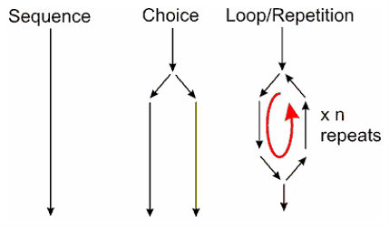

Tutorial: Conditions and Loops#
Logic and flow#
This live script will teach you how to test variables if they meet certain criteria. It will also show how you can loop through your data calculations really fast. Scripts and programs can have three main types of flow.

The first is a sequence, a set of commands that are followed one after another. This is what we have been doing so far.
The second is a choice, where you the code asks “IF a variable is equal to this, do A, else do B “
The third is repetition, where we ask the code to loop over things for a set number or until a choice is met.
The last key point to note is that when we deal with loops, it can end up looping indefinitely, and surprisingly easy to do. In principle you should be able to stop it, but in most cases you need to close your Colab-tab.
Logical statements#
There are a few conditional logic statements that you can use to test values and variables. Many you have met it maths already.
Relational Operators#
These work on boolean answers, that of True or False.
Note that Using an
=with two variables means you assign one of them as the value of the other. Using==tests if the two variables are equivalent.I’ve assigned each to a variable to show this and used the
print()to display the value to the screen for each answer.You can invert your logic using a
notor symbol~.You can test two things using
andor&(logicaland, both tests need to be true), ororor|(logicalor, one of two tests needs to be true).
A more details are given on the overview page of this session.
x, y, z = 5, 4, 5 # assign values to variables x, y and z
print(x > y) # True - x is bigger than y is true
print(x < y) # False - x is not bigger than y, false
print(x == y) # False - x is not equivalent to y
print(x == z) # True - x is equivalent to z
print(x < z) # False - x is not smaller than z
print(x <= z) # True - x is equal or smaller than z
print(x != y) # True - x is NOT equal to y
print(not(z < y)) # True - inverts answer as z is NOT smaller than y
print((x == z) and (y < x)) # True - x is equivalent to z AND y is smaller than x
print((x == z) & (x < y)) # False - x is equivalent to z but y is NOT smaller than x
print((x == z) or (x < y)) # True - x is equivalent to z, y is NOT smaller than x but only one needs to be true
print((x == z) ^ (x > y)) # False - x is equivalent to z, y is smaller than x, but either one or the other needs to be true (exclusive or, XOR)
Relational Operators with arrays#
Only ‘true’ values will be selected when used with a vector (1D array) or matrix (multi-dimensional array):
import numpy as np
a = np.arange(10) # creates array
b = a <= 2 # creates array of True and False
print(b) # prints boolean array
print(a[b]) # prints only True values of a
TASK 1#
Create a vector B that goes from 0 to 10 in steps of 1. Using a relational operator, find the values of the vector that are above 5 and print them to the screen.
Set up the vector B
Generate a true and false vector for values above 5.
Create a third vector of only the true values and use
print()to print the values to the screen.
Conditional logic#
Conditional logic also works with boolean answers and can be used to control the decision making using the relational operators. We can do this through conditional expressions such as if, elif and else statements.
Note: In python any value entered is a string and needs to be converted to a numerical value with
int()orfloat
# ask the user to enter a value
x = int(input('Enter the percentage mark you want for this course: ')) # the string needs to be converted into a numerical value so that it can be compared to a numerical value.
if (x == 100):
print("Aim high!\n")
elif (x >= 70):
print(f'{x:.0f} is a first class honors')
elif (x >= 60):
print(f'A {x:.0f} mark is a 2:1')
elif (x >= 50):
print(f'A {x:.0f} mark is a 2:2')
elif (x >= 40):
print(f'You can do better than that')
elif (x > 0):
print(f'Too low')
else:
print(f'That is not a valid score')
This code sorts the data you have entered into one of the answers above and then ends. It starts with if, if True prints and then terminates. If not True (False), moves to see if the elif is True, and so on. Note also the else section at the end which catches all the other options.
You can have as many elif as you want, but it needs to start with an if. The else statement is also optional.
Protection in algorithms using conditional logic#
You can use an if statement to end a program early if the user inputs something incorrectly, for example a negative number when your operation is calculating a square root. To do the code test in one line that both variables are correct using the or (|) logic operator. If either is wrong the code will return and exit.
a = float(input('enter a positive number: '))
b = float(input('enter a negative number: '))
print('a = {:.1f} and b = {:.1f}'.format(a,b))
if (a < 0) or (b > 0):
print('Not correct')
else:
print('answer is {:.2f}\n'.format(b*a**0.5))
Using If blocks as option flow#
You can use inputs to direct the flow of your algorithm. Here we ask the user to enter a value which specifies what the program does next.
import numpy as np
x = int(input('Enter a value:\n1 finds the maximum \n2 finds the minimum\n3 finds the average\n'))
y = np.array([6.85,1.34,9.55,3.53,6.53,7.54])
if(x==1):
print('{:.2f}'.format(y.max()))
elif(x==2):
print('{:.2f}'.format(y.min()))
elif(x==3):
print('{:.2f}'.format(y.mean()))
else:
print('{:.0f} is not an option'.format(x))
TASK 2#
Write an algorithm that:
Asks the user to enter a value and assign this to a variable called POS.
Test to see if the variable is positive or not.
If it is negative, end the algorithm early with a message to the user.
If true, calculate the value \(\ln \sqrt{\mathrm{POS}}\) and print to the screen.
Conditional logic and strings#
You can use if statements with strings to direct a program to run certain options. To do this, you need to compare the input to a string.
x = input('Type y to get a nice message: ')
if x == 'y':
print('You are looking good today')
else:
print('You are not looking too good')
TASK 4#
Write an algorithm that:
Asks the user to enter a value.
Asks the user if the value entered is degrees celsius or degrees fahrenheit.
If you enter C it converts and prints the value in fahrenheit to the screen.
If you enter F it converts and prints the value in celsius to the screen.
Make sure it only calculates values above absolute zero.
The conversion is (X°F − 32) × 5/9 = Y°C